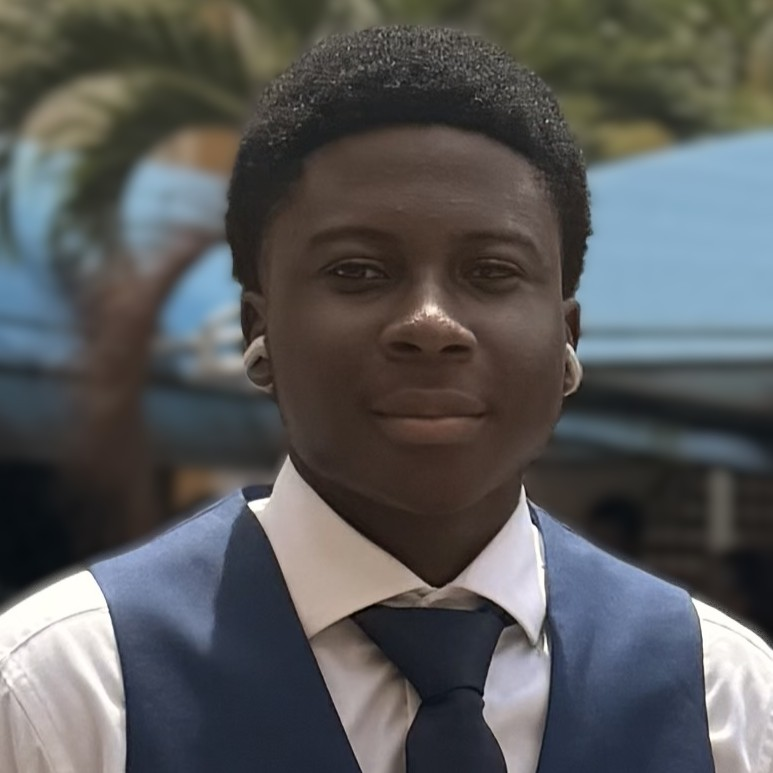

Web Developer | Designer | Programmer

Hi, I am Charles -- a Computer Science student and aspiring Full-Stack Developer/Software Engineer who enjoys turning ideas into real,working applications. I have a strong foundation in programming languages such as C++, Python, and JavaScript, and I am constantly seeking to expand my knowledge and skills in the ever-evolving field of technology. I am passionate about creating innovative solutions that make a positive impact on people's lives.
I have built several projects using HTML, CSS, and JavaScript, and I showcase my work on Github. Building these projects has helped me strengthen my problem-solving skills and gain practical experience in developing and improving software. I am currently expanding my skills in Python, SQL, JavaScript, and backend development while exploring defferent techonologies and frameworks used in modern software development.
My long-term goal is to become a skilled Full-Stack Developer and Software Engineer, capable of building complete, scalable applications from frontend to the backend. I am always learning, experimenting with new technologies, and working on personal projects to enhance my skills and stay up-to-date with industry trends. I am excited about the future of technology and the endless possibilities it offers for innovation and creativity.
HELLO THED ppppppppppppppppp ppppppppppppppppp
Email: charlesaddo637@gmail.com
LinkedIn: LinkedIn Profile